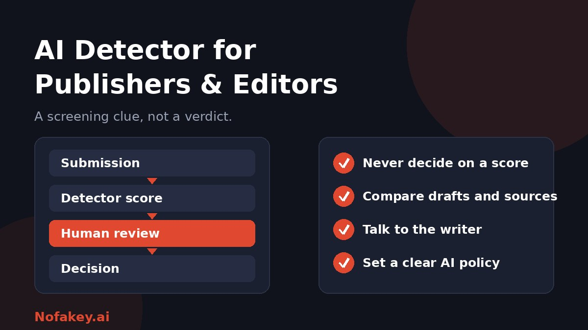

Editors now receive pitches, articles and manuscripts that may have been shaped by AI, sometimes openly and sometimes not. An AI detector can look like an easy filter. Used well, it helps you decide where to look closer. Used badly, it damages trust with good writers. This guide shows how publishers and editors can use detectors responsibly.
Why publishers and editors ask about AI detection
The worries are real and fairly specific:
- Credibility: readers expect to know who or what produced what they are reading.
- Accuracy: AI text can contain confident mistakes, invented quotes and fake sources.
- Originality: some contributors may submit generic or recycled material.
- Contracts and rights: agreements often require that work is the writer's own.
- Volume: teams cannot read every submission closely, so they look for a first filter.
What a detector can and cannot do for an editor
| It can | It cannot |
|---|---|
| Flag passages that resemble AI-style patterns | Prove who wrote something |
| Help prioritise which pieces to read more closely | Tell you how much AI was used or why |
| Start a conversation with a writer | Judge short pieces or heavily edited text reliably |
| Support a consistent screening routine | Avoid false positives, especially on clear, formal or non-native writing |
The limits are well explained in our guide on whether AI detectors are accurate. The short version: scores are probabilities of resemblance, they vary between tools, and they can be wrong in both directions.
What to look for in an AI detector
Many "best detector" lists are written by vendors and focus on accuracy claims. Instead, test any tool against your own needs:
- Stable results. Scan the same text twice. Wildly different scores are a bad sign.
- Explanations, not just a number. Sentence-level highlights help editors see where to look.
- Honest limits. Good tools say plainly that results are not proof and may include an "inconclusive" outcome.
- Test on known samples. Try work you know is human, including from non-native writers, and clearly AI-made work, and note the mistakes.
- Privacy and data handling. Check whether uploaded manuscripts are stored or used for training before pasting unpublished work.
- Fit with your workflow. Consider file types, languages, team access and reporting.
- Independent evidence. Look for testing beyond the vendor's own claims.
A fair review workflow for editors
- Publish your AI policy first. Tell contributors what use is allowed and how to disclose it.
- Read before you scan. Form your own impression of voice, depth and originality.
- Use the detector as a triage step, not a gatekeeper.
- Verify the substance. Check quotes, names, dates, statistics and sources. Invented citations are a stronger signal than any score.
- Look at the process. Ask for notes, drafts, interview recordings or version history where reasonable.
- Talk to the writer. Ask neutral questions about how the piece was developed.
- Decide on editorial grounds: accuracy, originality, policy compliance and fit. Record your reasoning.
Stronger signals than a detector score
- Fabricated or unverifiable sources and quotes that nobody can trace.
- Generic content with no first-hand detail, reporting or point of view.
- Factual errors stated with confidence.
- A mismatch with the writer's earlier work, combined with an inability to discuss the piece.
- Synthetic images or voices offered as real. For these, see what a deepfake is and how to protect yourself.
Write an AI policy for contributors
Disputes mostly come from unclear rules. A short policy should cover:
- What is allowed: for example research help, grammar tools or translation, versus generating the draft.
- What must be disclosed, and where. Our guide on how to label AI-generated content has wording you can adapt.
- Who is responsible for accuracy. The contributor, regardless of the tools used.
- How concerns are handled, including the chance for the writer to respond.
- Your own use of AI, so you hold yourself to the same standard.
Treating writers fairly
- Assume good faith until review shows otherwise.
- Be extra careful with non-native English writers, whose plain, formal prose may be flagged more often.
- Keep screening results confidential and share them only with those who need them.
- Allow a response and an appeal before any lasting decision.
- Review your process regularly, because tools and AI models change quickly.
Publishing AI-assisted content and Google
Editors also ask whether AI-assisted work hurts search visibility. The short answer is that quality and originality matter most. Read our guide on whether Google penalizes AI-generated content, and our explainer on AI watermark detection for how hidden signals might help in future.
Conclusion
An AI detector can be a helpful screening step for publishers and editors, but it is a clue and not a judge. Combine it with your own reading, source checks, a clear contributor policy and a fair conversation with the writer. For a quick first read on suspicious claims, paste them into our free checker, and find more guides on the Nofakey.ai blog.
Frequently asked questions
Should publishers use AI detectors?
They can help as a screening step, but a detector result should never be the sole basis for rejecting work or accusing a writer. Combine it with editorial review, source checks and a conversation with the writer.
What should editors look for in an AI detector?
Look for stable results on repeat scans, clear explanations rather than a bare score, sentence-level highlights, honest statements about limits, sensible privacy handling, and independent testing rather than vendor claims alone.
Can an AI detector prove a writer used AI?
No. Detectors estimate resemblance to AI patterns and can be wrong in both directions. A result is a clue that calls for human review.
How should editors handle a flagged submission?
Review the piece yourself, check facts, quotes and sources, look at drafts or notes, and ask the writer to explain their process before making any decision.
Should publishers have an AI policy for contributors?
Yes. A clear written policy on what AI use is allowed and how it must be disclosed prevents disputes and makes review fairer.
Got a claim or message you want a quick first read on?
Run it through the checker